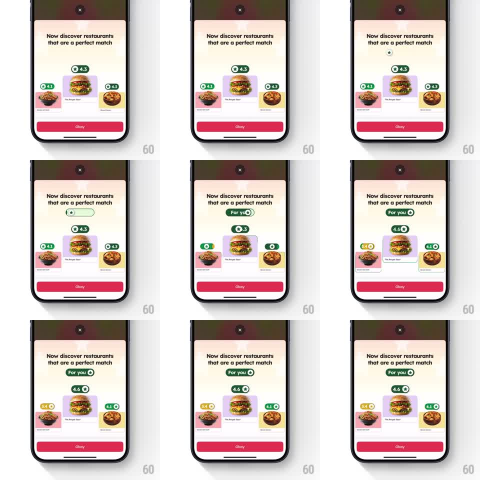

Media
Frame-by-frame

Rebuild this animation 1:1: Zomato's personalization intro - restaurant cards sit with their ratings, a "For you" badge bounces in, and every rating badge flips to a personalized score in a wave.

Rebuild this animation 1:1: Zomato's personalization intro - restaurant cards sit with their ratings, a "For you" badge bounces in, and every rating badge flips to a personalized score in a wave. ## Integration Integration: stack-agnostic spec - springs given as stiffness/damping, timed motions as duration + curve; map every value to your framework and animation library of choice. ## Scene Cream onboarding sheet over a dimmed map: "Now discover restaurants that are a perfect match", three restaurant cards in a row (bowls flanking "The Burger Deal" in the center), each with a green rating badge (4.1, 4.3, 4.3). A pink "Okay" button at bottom and a close X on top. ## Motion spec Pattern: bouncy badge reveal with a cascading rating flip. - A small star pill appears above the cards (scale 0 -> 1, spring ~400/16), then expands into the "For you ✦" badge (width spring ~320/18, label fading in mid-expansion). - The center card's rating badge flips first: the number counts up 4.3 -> 4.6 (rolling digits, 400ms) as the badge shifts green -> deeper green with a star (200ms), with a small bounce on settle (scale 1 -> 1.15 -> 1, spring ~380/14). - The flanking badges follow in a wave (150ms stagger): 4.1 -> 5.0 and 4.3 -> 5.1, turning golden-yellow as they become personalized picks. - Cards themselves do a subtle proud lift as their badge flips (rise 4pt + back, spring ~320/22). ## Calibration - The wave order is center-out: hero card first, sides after. - Personalized badges are visually distinct (gold with star) from the plain green originals - the before/after must read at a glance. ## Reduced motion Badge fades in; ratings swap without the count animation. ## Don't miss - Cards keep their photos and names; only badges and scores change. - The "For you" badge stays after the wave - it is the screen's new anchor.